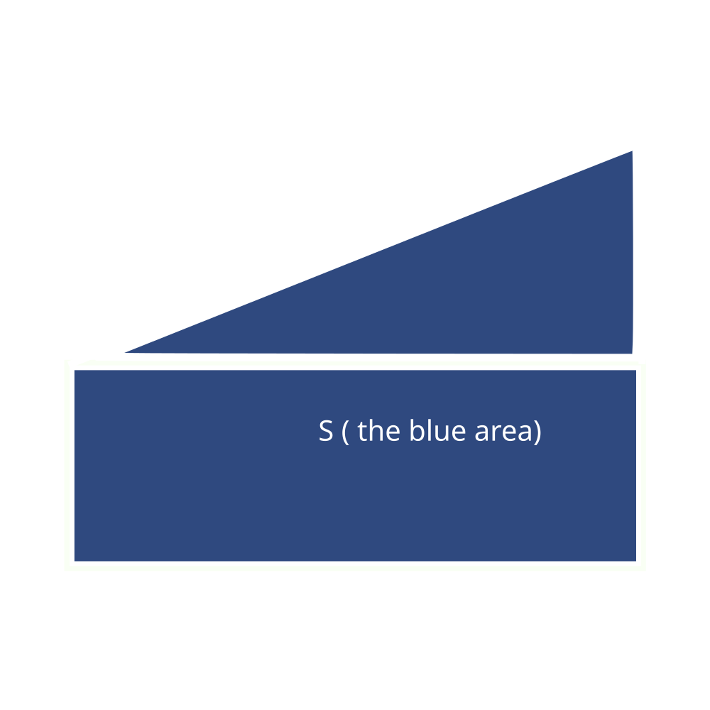

| Letter | Description | Unit |
|---|---|---|
| v | Final velocity | m/s |
| u | Initial velocity | m/s |
| a | Acceleration | m/s² |
| s | Displacement | m |
| t | Time | s |
Diagram

v = u + ats = 1/2 (u + v) ts = ut + 1/2 at²s = vt - 1/2 at²v² = u² + 2as (cannot be represented with the
diagram)Work done (J) = Force (N) * Distance (m)
Kinetic energy (J) = 1/2 * mass * velocity²
Gravitational potential energy (J) = mass * gravitational acceleration * height
Note
Earth’s gravitational acceleration is 9.8 m/s² downwards
You will also need to know sin, cos and tan to find out the x and y force given the direction and force.